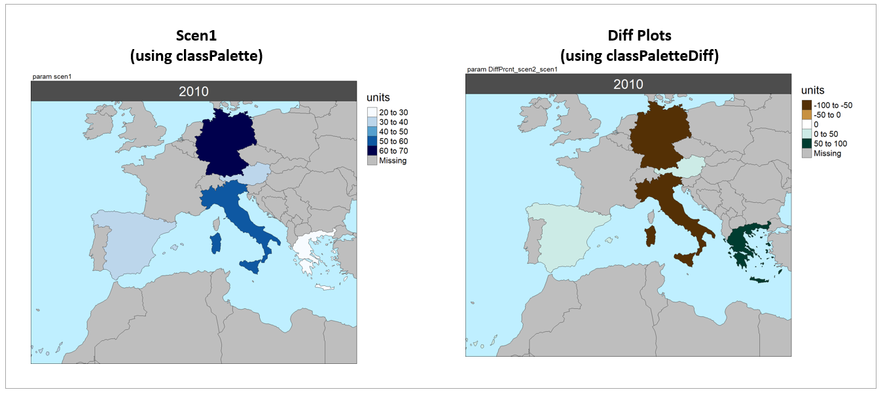
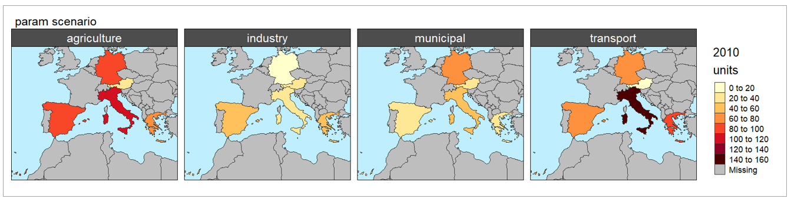

Key Links

- Github: https://github.com/JGCRI/metis
- Webpage: https://jgcri.github.io/metis/
- Cheatsheet: https://github.com/JGCRI/metis/blob/master/metisCheatsheet.pdf
Pre-loaded Maps
Metis comes with a set of preloaded maps. A full list of metis maps are available at colors, maps and params. The pre-loaded maps all come with each polygon labelled in a subRegion column. For each map the data contained in the shapefile and the map itself can be viewed as follows:
Example View of Pre-loaded Map for US49

Plot data on Pre-loaded Maps
metis.mapsProcess will search through the list of pre-loaded metis maps to see if it can find the “subRegions” provided in the data and then plot the data on those maps. Some examples are provided below:
US 49
library(metis) data = data.frame(subRegion=c("CA","FL","ID","MO","TX","WY"), x=c(2050,2050,2050,2050,2050,2050), value=c(5,10,15,34,2,7)) metis.mapsProcess(polygonTable=data, folderName = "vignetteMaps", mapTitleOn = F)
US49

US49 Outputs structure

US 52
library(metis) data = data.frame(subRegion=c("AK","FL","ID","MO","TX","WY"), x=c(2050,2050,2050,2050,2050,2050), value=c(5,10,15,34,2,7)) metis.mapsProcess(polygonTable=data, folderName = "vignetteMaps", mapTitleOn = F)
US52
US 49 Counties
When county data is provided. Several counties have the same name so it may be necessary to identify the correct data using the subRegionAlt column which contains county_state combination. This can be viewed in the shapefile data as metis::mapUS49County@data. In the example below there are 8 Orange counties, 9 Putnam counties and 3 Ellis counties. By using the county_state combination we can be more specific.We also use the argument nameAppend to append a name to the modified files.
library(metis) unique(mapUS49County@data$subRegion) # Check subRegion Names unique(mapUS49County@data$subRegionAlt) # Check Alternate names data = data.frame(subRegion=c("Pender_NC","Larue_KY","Jim Wells_TX","Orange_IN","Putnam_FL","Ellis_KS"), x=c(2050,2050,2050,2050,2050,2050), value=c(5,10,15,34,2,7)) metis.mapsProcess(polygonTable=data, folderName = "vignetteMaps", nameAppend = "_Alt", mapTitleOn = F)
US49 Counties

GCAM 32 Regions
library(metis) unique(mapGCAMBasins@data$subRegion) # Check Available Regions data = data.frame(subRegion=c("Colombia","China","EU-12","Pakistan","Middle East","Japan"), x=c(2050,2050,2050,2050,2050,2050), value=c(5,10,15,34,2,7)) metis.mapsProcess(polygonTable=data, folderName = "vignetteMaps", mapTitleOn = F)
GCAM 32 Regions

GCAM Basins
library(metis) unique(mapGCAMBasins@data$subRegion) # Check Available Regions data = data.frame(subRegion=c("Negro","La_plata","Great","New_England","Indus","Zambezi"), x=c(2050,2050,2050,2050,2050,2050), value=c(5,10,15,34,2,7)) metis.mapsProcess(polygonTable=data, folderName = "vignetteMaps", mapTitleOn = F)
GCAM Basins

World Countries
library(metis) unique(mapCountries@data$subRegion) # Check Available Regions data = data.frame(subRegion=c("Colombia","China","India","Spain","Ghana","Iran"), x=c(2050,2050,2050,2050,2050,2050), value=c(5,10,15,34,2,7)) metis.mapsProcess(polygonTable=data, folderName = "vignetteMaps", mapTitleOn = F)
World Countries

World States
library(metis) unique(mapStates@data$subRegion) # Check Available Regions data = data.frame(subRegion=c("Punjab","FL","TX","Faryab","Assam","Lac"), x=c(2050,2050,2050,2050,2050,2050), value=c(5,10,15,34,2,7)) metis.mapsProcess(polygonTable=data, folderName = "vignetteMaps", mapTitleOn = F)
World States
Plot data on Custom Shapefiles
Users can provide metis.mapsProcess custom shapefiles for their own data if needed. The example below shows how to create a custom shapefile and then plot data on it. For this example we will assume the user wants to plot data for the different states in Colombia.
library(metis); library(rgdal) customShape <- metis::mapStates # Read in World States shape file customShape <- customShape[customShape@data$region %in% c("Colombia"),] # Subset the shapefile to Peru customShape@data <- droplevels(customShape@data) metis.map(customShape,labels=T) # View custom shape customShape@data <- customShape@data %>% dplyr::rename(states=subRegion) # Lets assume the subRegion column was called "states" head(customShape@data) # review data unique(customShape@data$states) # Get a list of the unique subRegions # Create a dataframe with data for some of the states data = data.frame(states=c("Cauca","Valle del Cauca","Antioquia","Córdoba","Bolívar","Atlántico"), x=c(2050,2050,2050,2050,2050,2050), value=c(5,10,15,34,2,7)) metis.mapsProcess(polygonTable=data, subRegShape = customShape, subRegCol = "states", subRegType = "states", folderName = "vignetteMaps_customShape", mapTitleOn = F)
Custom Shape
Crop to Boundary
By setting the cropToBoundary argument to T the function will crop your map to the regions with data provided. This is particularly helpful for data plotted on the world maps as shown in the example below:
library(metis) data = data.frame(subRegion = c("India","China"), year=c(2010,2010),value = c(32,54)) metis.mapsProcess(polygonTable = data, mapTitleOn = F, folderName = "vignetteMaps", cropToBoundary=F, ) metis.mapsProcess(polygonTable = data, mapTitleOn = F, folderName = "vignetteMaps", cropToBoundary=T, nameAppend="Cropped")
Crop to Boundary
Extended Background
By turning on extension a bacground layer will be added to any shape map.
library(metis) data = data.frame( subRegion = c("India","China"), year=c(2010,2010), value = c(32,54)) metis.mapsProcess(polygonTable = data, mapTitleOn=F, folderName = "vignetteMaps", cropToBoundary =T, extension = T, nameAppend="Extended")
Extended Background

Multi-Scenario Diff plots
With multiple scenarios assigning a scenRef calculates the absolute and percentage difference between the different scenarios and stores them in corresponding folders.
library(metis) data = data.frame(subRegion = c("Austria","Spain", "Italy", "Germany","Greece", "Austria","Spain", "Italy", "Germany","Greece"), scenario = c("scen1","scen1","scen1","scen1","scen1", "scen2","scen2","scen2","scen2","scen2"), year = rep(2010,10), value = c(32, 38, 54, 63, 24, 37, 53, 23, 12, 45)) metis.mapsProcess(polygonTable = data, folderName ="multiScenario", cropToBoundary=T, extension = T, scenRef="scen1")
Multi-scenario

Multi-scenario Folders

Scale Range
library(metis) data = data.frame(subRegion = c("Austria","Spain", "Italy", "Germany","Greece", "Austria","Spain", "Italy", "Germany","Greece"), scenario = c("scen1","scen1","scen1","scen1","scen1", "scen2","scen2","scen2","scen2","scen2"), year = rep(2010,10), value = c(32, 38, 54, 63, 24, 37, 53, 23, 12, 45)) metis.mapsProcess(polygonTable = data, folderName ="scaleRange", cropToBoundary=T, extension = T, scenRef="scen1", scaleRange = c(0,50), scaleRangeDiffAbs = c(-100,100), scaleRangeDiffPrcnt = c(-60,60))
Scale Range

Color Palettes
library(metis) data = data.frame(subRegion = c("Austria","Spain", "Italy", "Germany","Greece", "Austria","Spain", "Italy", "Germany","Greece"), scenario = c("scen1","scen1","scen1","scen1","scen1", "scen2","scen2","scen2","scen2","scen2"), year = rep(2010,10), value = c(32, 38, 54, 63, 24, 37, 53, 23, 12, 45)) metis.mapsProcess(polygonTable = data, folderName ="colorPalettes", cropToBoundary=T, extension = T, scenRef="scen1", classPalette = "pal_wet", classPaletteDiff = "pal_div_BrGn")
Color Palettes

Multi-Year
library(metis) data = data.frame(subRegion = c("Austria","Spain", "Italy", "Germany","Greece", "Austria","Spain", "Italy", "Germany","Greece", "Austria","Spain", "Italy", "Germany","Greece", "Austria","Spain", "Italy", "Germany","Greece"), year = c(rep(2025,5), rep(2050,5), rep(2075,5), rep(2100,5)), value = c(32, 38, 54, 63, 24, 37, 53, 23, 12, 45, 23, 99, 102, 85, 75, 12, 76, 150, 64, 90)) metis.mapsProcess(polygonTable = data, folderName ="multiYear", cropToBoundary=T, extension = T )
Multi-year

Multi-year Animation

Multi-Class
library(metis) data = data.frame(subRegion = c("Austria","Spain", "Italy", "Germany","Greece", "Austria","Spain", "Italy", "Germany","Greece", "Austria","Spain", "Italy", "Germany","Greece", "Austria","Spain", "Italy", "Germany","Greece"), class = c(rep("municipal",5), rep("industry",5), rep("agriculture",5), rep("transport",5)), year = rep(2010,20), value = c(32, 38, 54, 63, 24, 37, 53, 23, 12, 45, 23, 99, 102, 85, 75, 12, 76, 150, 64, 90)) metis.mapsProcess(polygonTable = data, folderName ="multiClass", cropToBoundary=T, extension = T )
Multi-class
